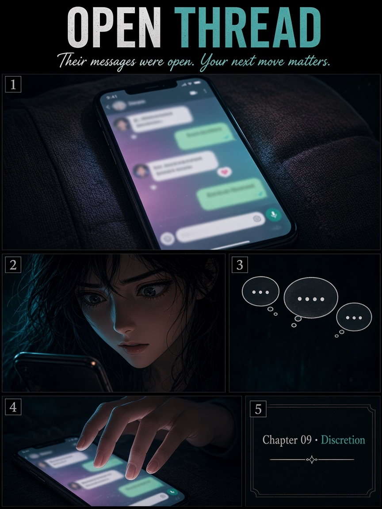
Their messages were open. Your next move matters.
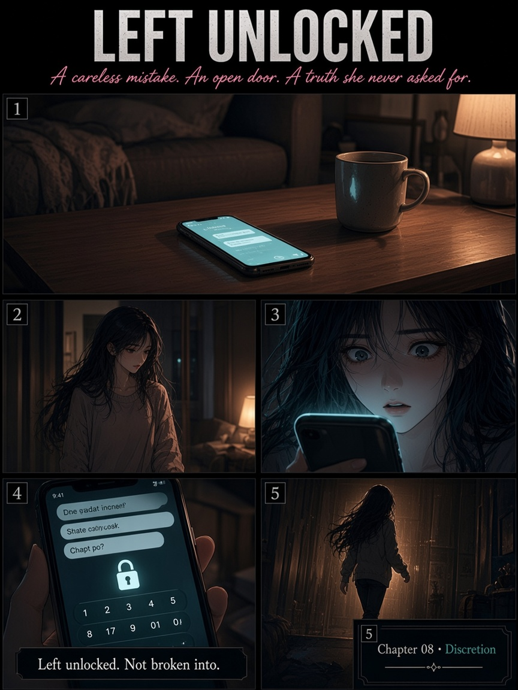
Left unlocked. Not broken into.
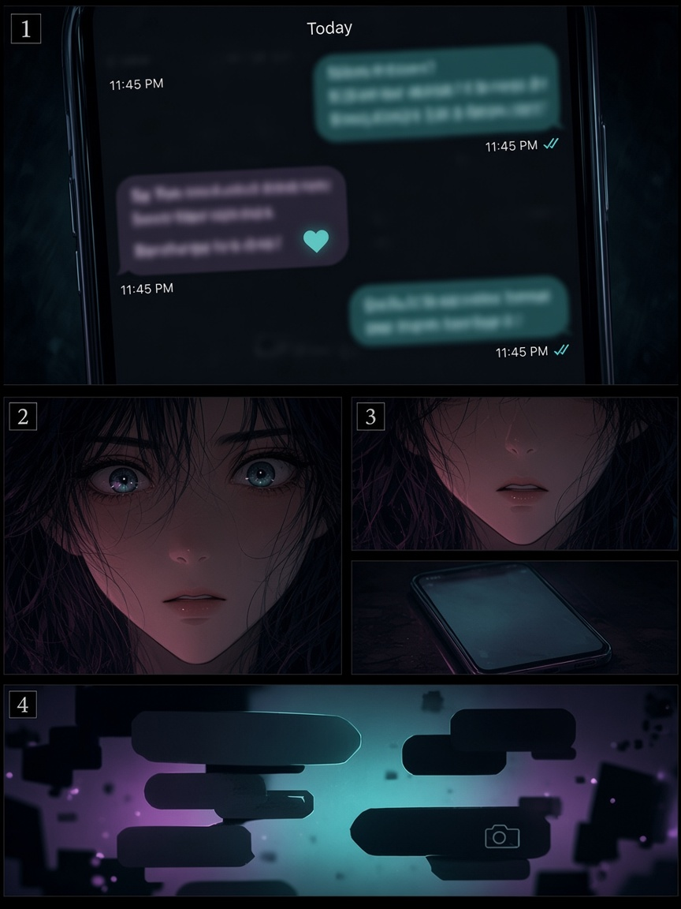
One unlocked screen. A whole different story.
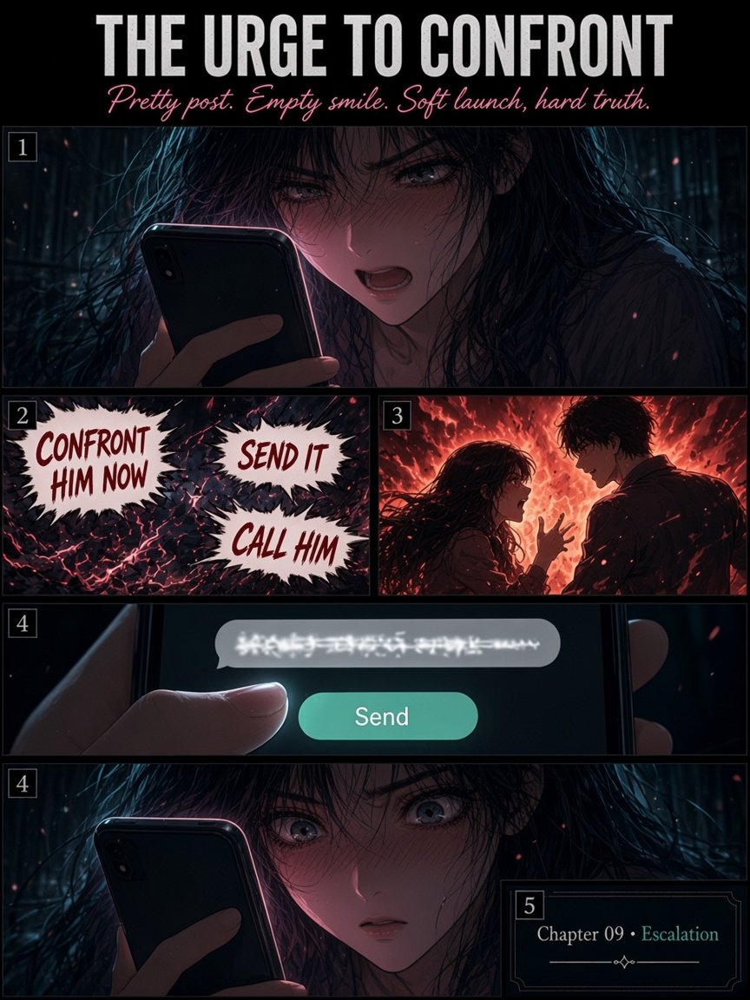
The urge to detonate is loud.
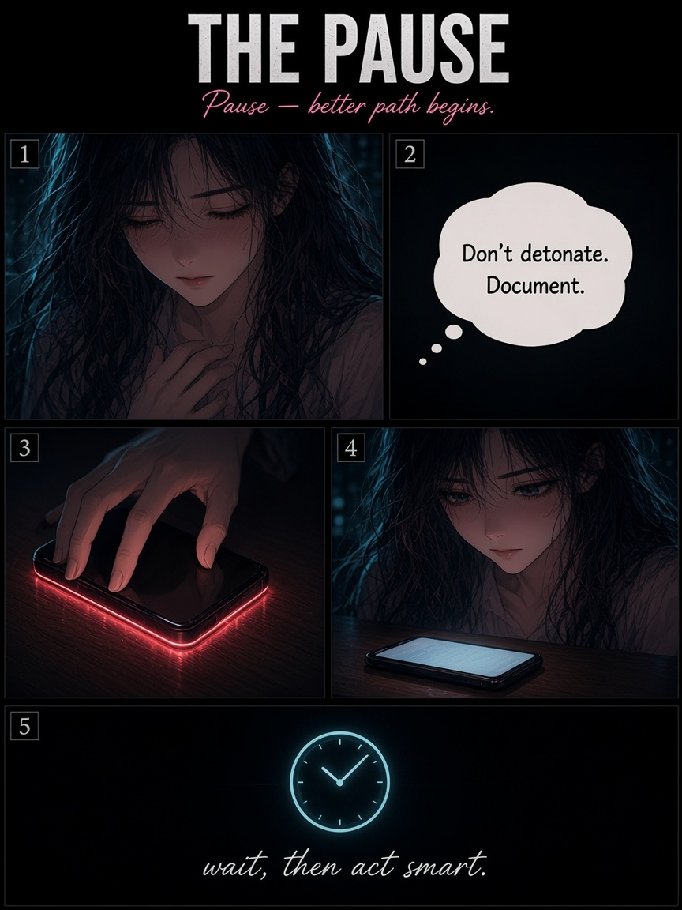
Don't detonate. Document.
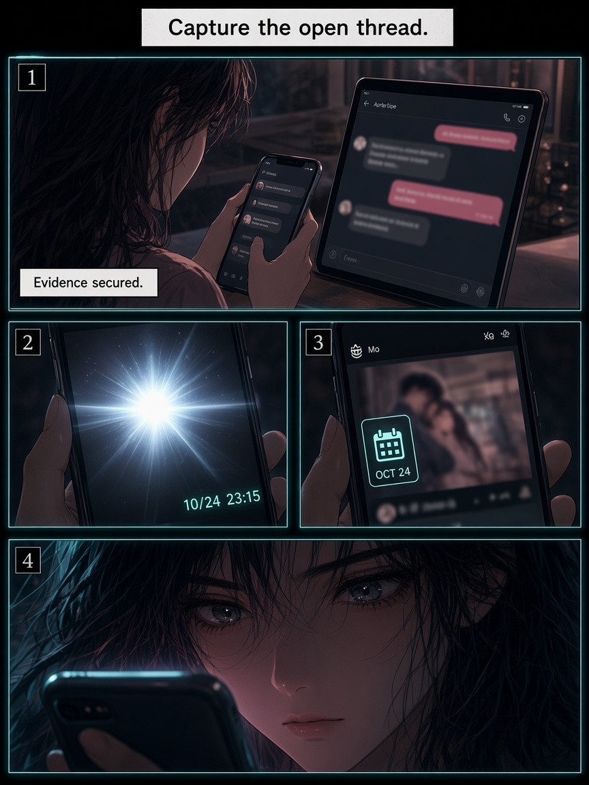
Capture the open thread.
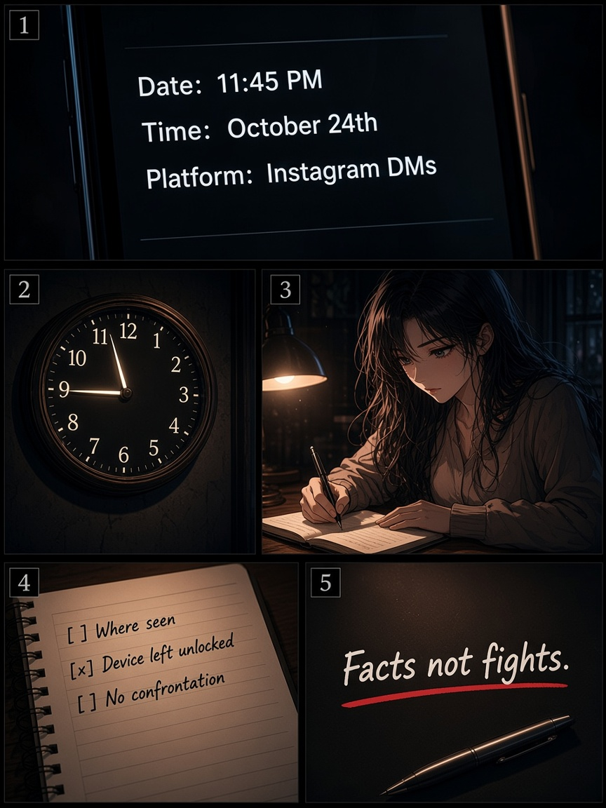
Date. Time. Platform. Facts.
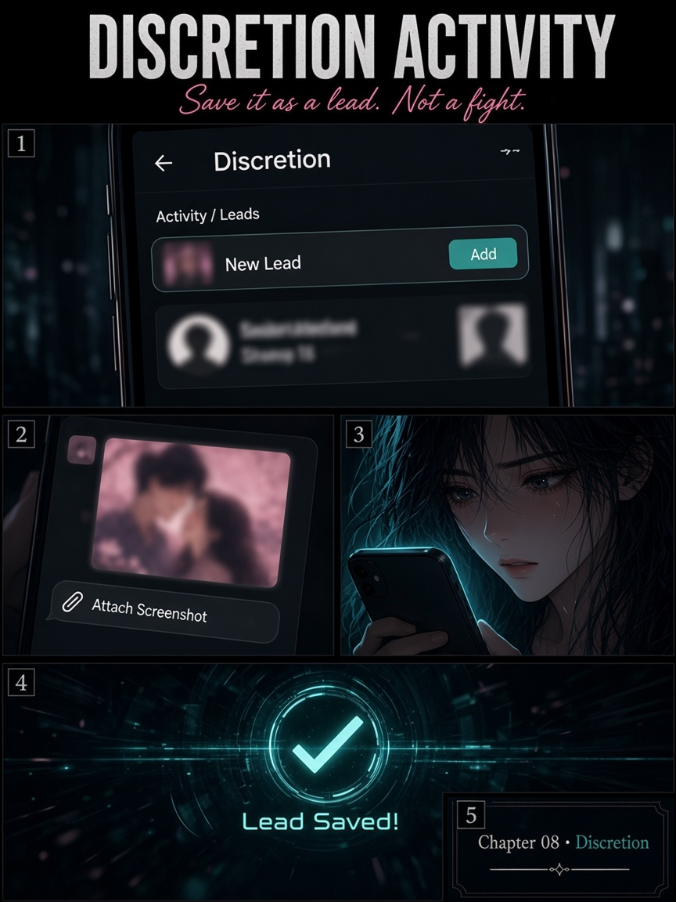
Save it as a lead. Not a fight.
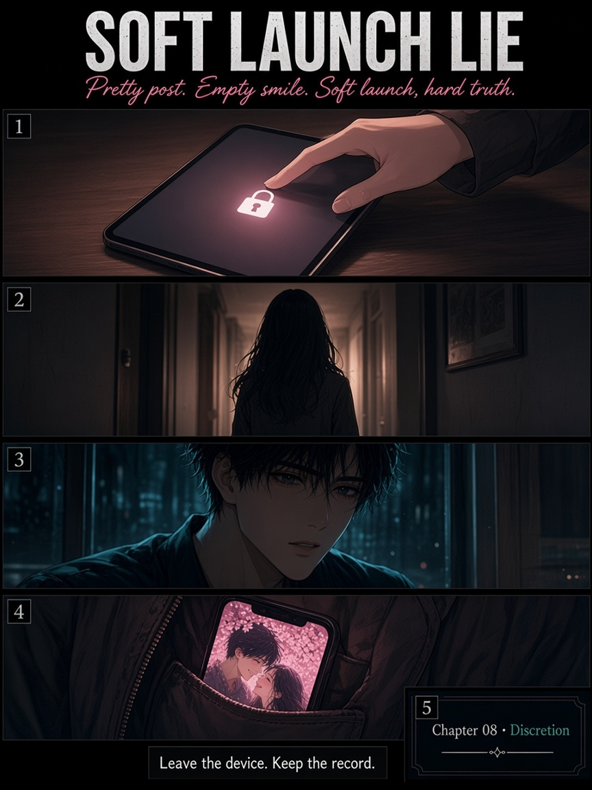
Leave the device. Keep the record.
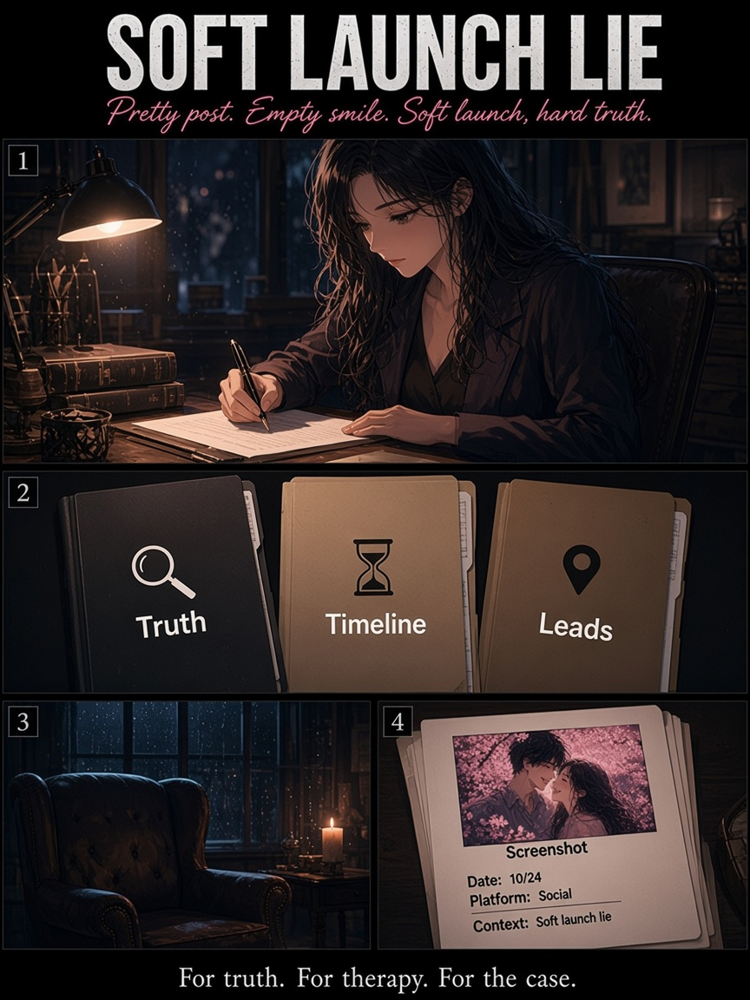
For truth. For therapy. For the case.
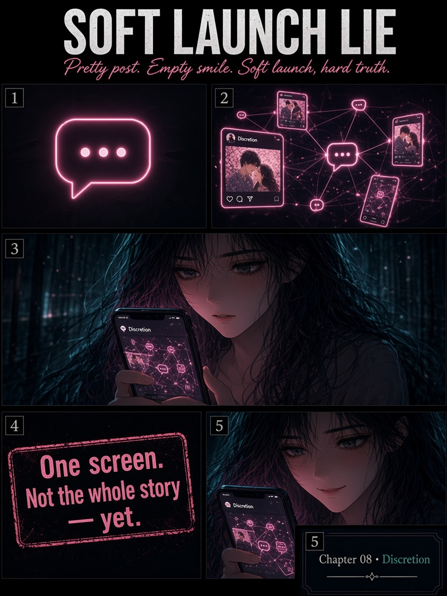
One screen. Not the whole story — yet.
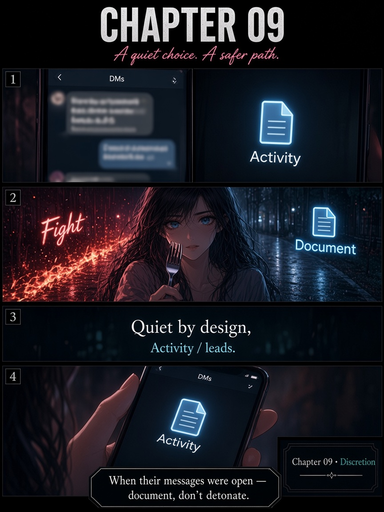
When their messages were open — document, don't detonate.
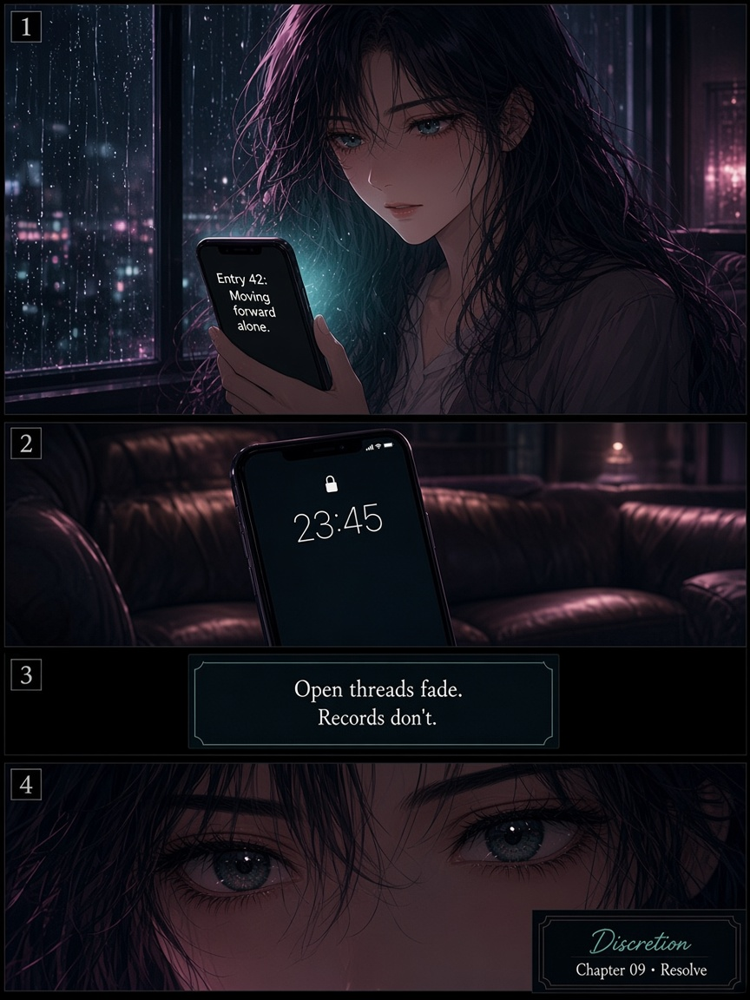
Open threads fade. Records don't.
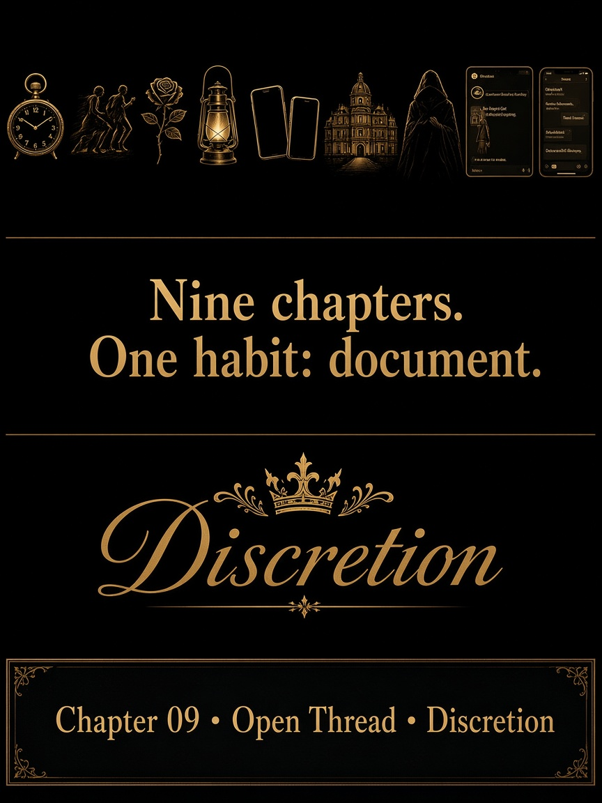
Nine chapters. One habit: document.